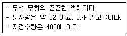
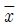
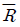

위험물기능장 (2009-07-12 기출문제)
1과목: 임의구분
1. 이황화탄소의 성질 또는 취급 방법에 대한 설명 중 틀린것은?
- 물보다 무겁다.
- 증기가 공기보다 가볍다.
- 물을 채운 수조에 저장한다.
- 연소시 유독한 가스가 발생한다.
(정답률: 90%)

2. 다음에서 설명하는 제4류 위험물은 무엇인가?

- 글리세린
- 에틸렌글리콜
- 아닐린
- 에틸알코올
(정답률: 73%)
3. 상온에서 물에 넣었을 때 용해되어 염기성을 나타내면서 산소를 방출하는 물질은?
- Na2O2
- KClO3
- H2O2
- NaNO3
(정답률: 61%)
4. 다음 중 아닐린의 연소범위 하한값에 가장 가까운 것은?
- 1.3vol%
- 7.6vol%
- 9.8vol%
- 15.5vol%
(정답률: 72%)
5. 위험물안전관리자의 선임신고를 허위로 한 자에게 부과 하는 과태료의 금액은?(2022년 2월 확인되 관련 규정으로 문제 변경됨)
- 50만원
- 100만원
- 300만원
- 500만원
(정답률: 83%)
6. 다음 위험물 중 상온에서 액체인 것은?
- 질산에틸
- 니트로셀룰로오스
- 피크린산
- 디니트로톨루엔
(정답률: 72%)
7. 벤젠핵에 메틸기 한 개가 결합된 구조를 가진 무색 투명한 액체로서 방향성의 독특한 냄새를 가지는 물질은?
- 톨루엔
- 질산메틸
- 메틸알코올
- 디니트로톨루엔
(정답률: 93%)
8. 물과 반응하여 심하게 발열하면서 위험성이 증가하는 물질은?
- 염소산나트륨
- 과산화칼륨
- 질산나트륨
- 질산암모늄
(정답률: 75%)
9. Halon 1011 의 화학식을 옳게 나타낸 것은?
- CH2FBr
- CH2ClBr
- CBrCl
- CFCl
(정답률: 82%)
10. 자기반응성 물질의 화재에 적응성이 있는 소화설비는?
- 분말소화설비
- 이산화탄소소화설비
- 할로겐화합물소화설비
- 물분무소화설비
(정답률: 81%)
11. 다음 중 지정수량이 나머지 셋과 다른 하나는?
- HClO4
- NH4NO3
- NaBrO3
- (NH4)2Cr2O7
(정답률: 77%)
12. 황화린에 대한 설명으로 틀린 것은?
- 삼황화린의 분자량은 약 348 이다.
- 삼황화린은 물에 녹지 않는다.
- 오황화린은 습한 공기 중 분해하여 유독성 기체를 발생 한다.
- 삼황화린은 공기 중 약 100℃에서 발화한다.
(정답률: 60%)
13. 산화프로필렌에 대한 설명 중 틀린 것은?
- 무색의 휘발성 액체이다.
- 증기의 비중은 공기보다 작다.
- 인화점이 약 -37℃ 이다.
- 비점은 약 34℃ 이다.
(정답률: 81%)
14. 알칼리토금속의 일발적인 성질로 옳은 것은?
- 음이온 2가의 금속이다.
- 루비듐, 라돈 등이 해당된다.
- 같은 주기의 알칼리금속보다 융점이 높다.
- 비중이 1보다 작다.
(정답률: 65%)
15. 다음 중 원자의 개념으로 설명되는 법칙이 아닌 것은?
- 아보가드로의 법칙
- 일정성분비의 법칙
- 질량보존의 법칙
- 배수비례의 법칙
(정답률: 75%)
16. 다음 위험물에 대한 설명으로 옳은 것은?
- C6H5NH2 는 담황색 고체로 에테르에 녹지 않는다.
- C3H5(ONO2)3 는 벤젠에 이산화질소를 반응시켜 만든다.
- Na2O2 의 인화점과 발화점은 100℃ 보다 낮다.
- (CH3)3Al 은 25℃에서 액체이다.
(정답률: 64%)
17. 헨리의 법칙에 대한 설명으로 옳은 것은?
- 물에 대한 용해도가 클수록 잘 적용된다.
- 비극성 물질은 극성 물질에 잘 녹는 것으로 설명된다.
- NH3, HCl, CO 등의 기체에 잘 적용된다.
- 압력을 올리면 용해도는 올라가나 녹아있는 기체의 부피는 일정하다.
(정답률: 73%)
18. 덩어리 상태의 유황을 저장하는 옥외저장소가 경계표시 내부의 면적(2 이상의 경계표시가 있는 경우에는 각 경계표시의 내부의 면적을 합한 면적)이 얼마일 때 소화난이도등급Ⅰ에 해당하는가?
- 100m2 이하
- 100m2 이상
- 1000m2 이하
- 1000m2 이상
(정답률: 62%)
19. 피크린산에 대한 설명으로 틀린 것은?
- 단독으로는 충격, 마찰에 비교적 둔감하다.
- 운반시 물에 젖게 하는 것이 안전하다.
- 알코올, 에테르, 벤젠 등에 녹지 않는다.
- 자연분해의 위험이 적어서 장기간 저장할 수 있다.
(정답률: 58%)
20. 염소산나트륨이 산과 반응하여 주로 발생되는 유독한 가스는?
- 이산화탄소
- 일산화탄소
- 이산화염소
- 일산화염소
(정답률: 79%)
2과목: 임의구분
21. NH4ClO3 에 대한 설명으로 틀린 것은?
- 금속 부식성이 있다.
- 조해성이 있다.
- 폭발성의 산화제이다.
- 폭발시 CO2, HCl, NO2 가스를 주로 발생한다.
(정답률: 83%)
22. 제1류 위험물 중 알칼리금속의 과산화물을 수납한 운반용기 외부에 표시하여야 하는 주의사항을 모두 옳게 나타낸 것은?
- 물기주의, 가연물접촉주의, 충격주의
- 가연물접촉주의, 물기엄금, 화기엄금 및 공기노출금지
- 화기ㆍ충격주의, 물기엄금, 가연물접촉주의
- 충격주의, 화기엄금 및 공기접촉엄금, 물기엄금
(정답률: 80%)
23. 위험물의 류별 구분이 나머지 셋과 다른 하나는?
- 니트로벤젠
- 과산화벤조일
- 펜트리트
- 테트릴
(정답률: 58%)
24. Cs 에 대한 설명으로 틀린 것은?
- 알칼리토금속이다.
- 융점이 30℃ 보다 낮다.
- 비중은 약 1.9 이다.
- 할로겐과 반응하여 할로겐화물을 만든다.
(정답률: 74%)
25. 다음 중 요오드 값이 가장 높은 것은?
- 참기름
- 채종유
- 동유
- 땅콩기름
(정답률: 92%)
26. 불소계 계면활성제를 기제로 하여 안정제 등을 첨가한 소화약제로서 보존성, 내약품성이 우수하지만 수용성 위험물의 화재 시에는 효과가 떨어지는 것은?
- 알코올형포
- 단백포
- 수성막포
- 합성계면활성제포
(정답률: 77%)
27. 산화성 액체 위험물의 일반적인 성질로 옳은 것은?
- 비중이 1보다 작다.
- 낮은 온도에서 인화한다.
- 물에 녹기 어렵다.
- 자신은 불연성이다.
(정답률: 82%)
28. 오황화인이 물과 반응하여 발생하는 가스가 연소하였을 때 주로 생성되는 것은?
- P2O5
- SO3
- SO2
- H2S
(정답률: 38%)
29. 황린 124g 을 공기를 차단한 상태에서 260℃ 로 가열하여 모두 반응하였을 때 생성되는 적린은 몇 g 인가?
- 31
- 62
- 124
- 496
(정답률: 73%)
30. 펌프와 발포기의 중간에 설치된 벤투리관의 벤투리작용과 펌프가압수의 포소화약제 저장탱크에 대한 압력에 의하여 포소화약제를 흡입ㆍ혼합하는 방식은?
- 펌프 프로포셔너 방식
- 프레셔 프로포셔너 방식
- 라인 프로포셔너 방식
- 프레셔 사이드 프로포셔너 방식
(정답률: 79%)
31. 위험물제조소의 건축물의 구조에 대한 설명 중 옳은 것은?
- 지하층은 1개 층 까지만 만들 수 있다.
- 벽ㆍ기둥ㆍ바닥ㆍ보 등은 불연재료로 한다.
- 지붕은 폭발시 대기 중으로 날아갈 수 있도록 가벼운 목재 등으로 덮는다.
- 바닥에 적당한 경사가 있어서 위험물이 외부로 흘러갈 수 있는 구조라면 집유설비를 설치하지 않아도 된다.
(정답률: 84%)
32. 위험물안전관리법령에서 정한 위험물안전관리자의 책무에 해당하지 않는 것은?
- 제조소등의 구조 또는 설비의 이상을 발견한 경우 관계자에 대한 연락 및 응급조치
- 제조소등의 계측장치ㆍ제어장치 및 안전장치 등의 적정한 유지ㆍ관리
- 안전관리자가 일시적으로 직무를 수행할 수 없는 경우에 대리자 지정
- 위험물의 취급에 관한 일지의 작성ㆍ기록
(정답률: 77%)
33. 에틸알코올 23g 을 완전연소하기 위해 표준상태에서 필요한 공기량은?
- 33.6L
- 67.2L
- 160L
- 320L
(정답률: 43%)
34. 제2류 위험물에 대한 설명 중 틀린 것은?
- 모두 가연성 물질이다.
- 모두 고체이다.
- 모두 주수소화가 가능하다.
- 지정수량의 단위는 모두 kg 이다.
(정답률: 87%)
35. 전기기기의 과도한 온도 상승, 아크 또는 스파크 발생의 위험을 방지하기 위해 추가적인 안전조치를 통한 안전도를 증가시킨 방폭구조는?
- 안전증방폭구조
- 특수방폭구조
- 유입방폭구조
- 본질안전방폭구조
(정답률: 84%)
36. 다음 소화약제 중 비할로겐계열로서 화학적 소화보다는 물리적 소화에 의해 화재를 진압하는 소화약제는?
- HFC-227ea(FM-200)
- IG-541(Inergen)
- HCFC Blend A(NAF S-Ⅲ)
- HFC-23(FE-13)
(정답률: 80%)
37. 압력의 차원을 질량 M, 길이 L, 시간 T 로 표시하면?
- ML-2
- ML-2T2
- ML-1T-2
- ML-2T-2
(정답률: 80%)
38. 다음 위험물을 완전연소시켰을 때 나머지 셋의 위험물의 연소 생성물에 공통적으로 포함된 가스를 발생하지 않는 것은?
- 황
- 황린
- 삼황화린
- 이황화탄소
(정답률: 78%)
39. 흐름 단면적이 감소하면서 속도두가 증가하고 압력두가 감소하여 생기는 압력차를 측정하여 유량을 구하는 기구로서 제작이 용이하고 비용이 저렴한 장점이 있으나 유체 수송을 위한 소요 동력이 증가하는 단점이 있는 것은?
- 로터미터
- 피토튜브
- 벤튜리미터
- 오리피스미터
(정답률: 86%)
40. 가솔린 저장탱크로부터 위험물이 누설되어 직경 2m 인 상태에서 풀(Pool) 화재가 발생되었다. 이 때 위험물의 단위면적당 발생되는 에너지 방출속도는 몇 kW 인가? (단, 가솔린의 연소열은 43.7kJ/g 이며, 질량 유속은 55g/m2ㆍs 이다.)
- 1887
- 2453
- 3775
- 7551
(정답률: 50%)
3과목: 임의구분
41. 탄화칼슘과 물이 반응하여 500g 의 가연성 가스가 발생하였다. 약 몇 g 의 탄화칼슘이 반응하였는가? (단, 칼슘의 원자량은 40이고 물의 양은 충분하였다.)
- 928
- 1231
- 1632
- 1921
(정답률: 71%)
42. 다음 중 서로 혼합하였을 경우 위험성이 가장 낮은 것은?
- 황화린과 알루미늄분
- 과산화나트륨과 마그네슘분
- 염소산나트륨과 황
- 니트로셀룰로오스와 에탄올
(정답률: 87%)
43. 주기율표상 0족의 불활성 물질이 아닌 것은?
- Ar
- Xe
- Kr
- Br
(정답률: 72%)
44. 전역방출방식 이산화탄소소화설비에서 저장용기 설치기준이 틀린 것은?
- 온도가 40℃ 이하이고 온도 변화가 적은 장소에 설치할 것
- 방호구역 내의 장소에 설치할 것
- 직사일광 및 빗물이 침투할 우려가 적은 장소에 설치할 것
- 저장용기에는 안전장치를 설치할 것
(정답률: 78%)
45. (C2H5)3Al 은 운반용기의 내용적의 몇 % 이하의 수납율로 수납하여야 하는가?
- 85%
- 90%
- 95%
- 98%
(정답률: 74%)
46. 다음 위험물의 화재시 알코올포소화약제가 아닌 보통의 포소화약제를 사용하였을 때 가장 효과가 있는 것은?
- 아세트산
- 에틸알코올
- 아세톤
- 경유
(정답률: 82%)
47. 이동탱크저장소 일반점검표에서 정한 점검항목 중 가연성 증기회수설비의 점검내용이 아닌 것은?
- 가연성증기 경보장치의 작동상황 적부
- 회수구의 변형ㆍ손상의 유무
- 호스결함장치의 균열ㆍ손상의 유무
- 완충이음 등의 균열ㆍ변형ㆍ손상의 유무
(정답률: 70%)
48. 이동탱크저장소에 의한 위험물의 운송에 대한 설명으로 옳지 않은 것은?
- 이동탱크저장소의 운전자와 알킬알루미늄 등의 운송책임자의 자격은 다르다.
- 알킬알루미늄 등의 운송은 운송책임자와 감독 또는 지원을 받아서 하여야 한다.
- 운송은 위험물취급에 관한 국가기술자격자 또는 위험물 운송자교육을 받은 자가 하여야 한다.
- 위험물운송자가 이동탱크저장소오 위험물을 운반할 때 해당 운송자격증을 휴대하지 않으면 벌금에 처해 진다.
(정답률: 66%)
49. (CH3CO)2O2 에 대한 설명으로 틀린 것은?
- 가연성 물질이다.
- 지정수량은 10kg 이다.
- 녹는점이 약 -10℃ 인 액체상이다.
- 화재 시 다량의 물로 냉각소화 한다.
(정답률: 62%)
50. Sr(NO3)2 의 지정수량은?
- 50kg
- 100kg
- 300kg
- 1000kg
(정답률: 87%)
51. 자동화재탐지설비를 설치하여야 하는 옥내저장소가 아닌 것은?
- 처마높이가 7m 인 단층 옥내저장소
- 저장창고의 연면적이 100m2 인 옥내저장소
- 에탄올 5만L를 취급하는 옥내저장소
- 벤젠 5만L를 취급하는 옥내저장소
(정답률: 77%)
52. 다음 위험물 중 혼재가 가능한 곳은? (단, 지정수량의 10배를 취급하는 경우이다.)
- KClO4 와 Al4C3
- Mg 와 Na
- P4 와 CH3CN
- HNO3 와 (C2H5)3Al
(정답률: 75%)
53. 위험물제조소의 옥내에 3기의 위험물취급탱크가 하나의 방유턱 안에 설치되어 있고 탱크별로 실제로 수납하는 위험물의 양은 다음과 같다. 설치하는 방유턱의 용량은 최소 몇 L 이상이어야 하는가? (단, 취급하는 위험물의 지정수량은 50L 이다.)
- 50
- 100
- 110
- 200
(정답률: 68%)
54. 알킬알루미늄등을 저장 또는 취급하는 이동탱크저장소에 관한 기준으로 옳은 것은?
- 탱크외면은 적색으로 도장을 하고 백색문자로 동판의 양 측면 및 경판에 “화기주의” 라는 주의사항을 표시한다.
- 알킬알루미늄등을 저장하는 경우 20kPa 이하의 압력으로 불활성 기체를 봉입해 두어야 한다.
- 이동저장탱크의 맨홀 및 주입구의 뚜껑은 10mm 이상의 강판으로 제작하고, 용량은 2000리터 미만이어야 한다.
- 이동저장탱크는 두께 10mm 이상의 강판으로 제작하고 3MPa 이상의 압력으로 10분간 실시하는 수압시험에서 새거나 변형되지 않아야 한다.
(정답률: 75%)
55.

관리도에서 관리상한이 22.15, 관리하한이 6.85,
= 7.5 일 때 시료군의 크기(n)는 얼마인가? (단, n=2일 때 A2 = 1.88, n=3일 때 A2 = 1.02, n=4일 때 A2 = 0.73, n=5일 때 A2 = 0.58 이다.)- 2
- 3
- 4
- 5
(정답률: 60%)
56. 200개 들이 상자가 15개 있다. 각 상자로부터 제품을 랜덤하게 10개씩 샘플링할 경우, 이러한 샘플링 방법을 무엇이라 하는가?
- 계통 샘플링
- 취락 샘플링
- 층별 샘플링
- 2단계 샘플링
(정답률: 76%)
57. 어떤 측정법으로 동일 시료를 무한횟수 측정하였을 때 데이터 분포의 평균치와 모집단 참값과의 차를 무엇이라 하는가?
- 편차
- 신뢰성
- 정확성
- 정밀도
(정답률: 83%)
58. 다음 중 신제품에 대한 수요예측방법으로 가장 적절한 것은?
- 시장조사법
- 이동평균법
- 지수평활법
- 최소자승법
(정답률: 92%)
59. ASME(American Society of Mechanical Engineers)에서 정의하고 있는 제품공정 분석표에 사용되는 기호 중 “저장(Storage)"을 표현한 것은?
- ○
- D
- □
- ▽
(정답률: 88%)
60. 다음 중 사내표준을 작성할 때 갖추어야 할 요건으로 옳지 않은 것은?
- 내용이 구체적이고 주관적일 것
- 장기적 방침 및 체계 하에서 추진할 것
- 작업표준에는 수단 및 행동을 직접 제시할 것
- 당사자에게 의견을 말하는 기회를 부여하는 절차로 정할 것
(정답률: 87%)